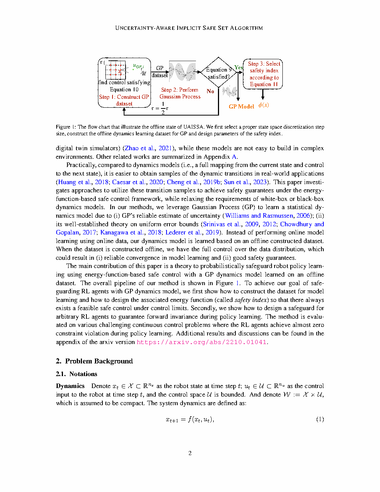
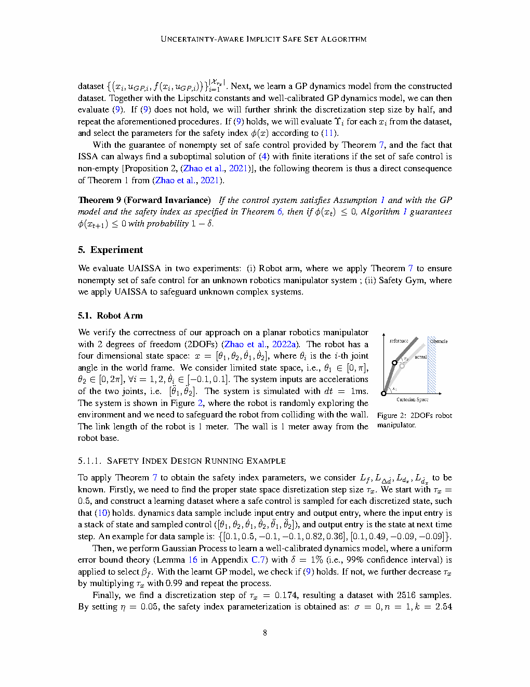
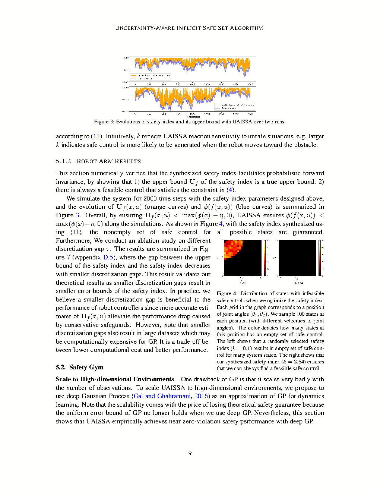

| Title | Probabilistic Safeguard for Reinforcement Learning Using Safety Index Guided Gaussian Process Models（安全指标引导高斯过程模型的强化学习概率安全防护） |
| Authors | Weiye Zhao*、Tairan He*（共同一作），Rui Chen，Changliu Liu（通讯作者） |
| Affiliation | 卡内基梅隆大学（Carnegie Mellon University），机器人研究所（Robotics Institute） |
| Venue | Learning for Dynamics and Control Conference (L4DC)，2023年，PMLR Vol. 211，pp. 783–796 |
| DOI / Links | arXiv: 2210.01041 | Published: PMLR Vol. 211 |
| TL;DR | 提出一种集成模型学习与安全控制的框架——用安全指标（Safety Index）指导高斯过程（GP）的离线数据采集，GP学习未知动力学的不确定性，再将不确定性纳入安全约束收紧，通过在线凸QP将任意RL动作投影到最近的安全动作。核心贡献：（1）无需白盒/黑盒动力学模型；（2）给出可证明的概率安全保证（概率前向不变性）；（3）安全过滤器与RL策略解耦，可包裹任意RL算法。Safety Gym和机器人臂任务中实现近零安全违规。 |
| Inspiration Source | → What Insight It Inspired | Type |
|---|---|---|
| Gaussian Process Regression（Rasmussen & Williams, 2006） | → GP不仅能给出预测均值，还能量化预测不确定性（后验方差）——这恰好可以用来"知道模型在哪里不自信"，从而在不确定的地方收紧安全约束、在确定的地方放宽约束。相比神经网络只给点估计，GP天然适合安全关键场景 | 数学工具 |
| Safety Index（Liu & Tomizuka, 2014, 2016） | → 安全指标 $\phi(x)$ 将高维状态空间的安全约束压缩为一个标量：$\phi(x) \le 0$ 等价于安全、$\phi(x) > 0$ 等价于危险。本文进一步为degree-2系统参数化了安全指标的设计规则（$n, k, \sigma$），确保在输入限幅下安全控制集合非空——这是连接"安全定义"与"控制可行性"的桥梁 | 控制理论 |
| Probabilistic Reachability / Stochastic CBF | → 确定性安全屏障函数（CBF）要求 $\dot{\phi} \le -\eta\phi$ 在任意扰动下成立——这对未知动力学来说太严格。将CBF的确定性约束放松为概率约束 $\Pr[\dot{\phi} \le -\eta] \ge 1-\delta$，恰好匹配GP提供的置信区间，实现了从"宁可保守"到"概率保证"的范式转换 | 形式化保证 |
| SafeOpt / GP-UCB（Sui et al., 2015; Srinivas et al., 2010） | → GP-based safe exploration的思路（在高置信区间内只探索安全区域），但SafeOpt需要在线采集数据并在每次迭代更新GP——这在RL的高交互频率下计算代价太高。本文反其道而行：离线一次性采好数据，在线只用GP推理（查表式的前向预测），大幅降低了在线计算开销 | 策略 |
flowchart TB
subgraph UNKNOWN["未知系统动力学"]
DYN["真实动力学: ẋ = f(x) + g(x)u + d(x,u)"]
CONST["硬约束: x ∈ 𝒮 = {x | φ(x) ≤ 0}"]
end
subgraph OFFLINE["离线阶段: 数据采集与模型训练"]
SAMPLE["安全导向采样: 在φ(x)≈0附近网格选点"]
FEAS["控制可行性筛选: 确保∃u满足安全约束"]
DATA["离线数据集: 𝒟 = {(xᵢ, uⱼ, ẋᵢⱼ)}"]
end
subgraph GP["GP动力学学习"]
GPREG["GP回归: 学习残差d(x,u)"]
GPOST["GP后验: μ(x,u) = E[d|x,u]; σ²(x,u) = Var[d|x,u]"]
end
subgraph SI["安全指标设计与约束合成"]
PHI["安全指标参数化: φ = σ + d_minⁿ − dⁿ − k·ḋ"]
DESIGN["参数选择n,k,σ: 确保𝒰_safe非空"]
TIGHT["约束收紧: μ_φ̇ + β·σ_φ̇ ≤ −η"]
end
subgraph ONLINE["在线阶段: 安全过滤"]
RL["任意RL智能体: π_RL → u_RL"]
QP["安全QP投影: u_safe = arg min ‖v−u_RL‖² s.t. v∈𝒰_safe"]
EXEC["执行u_safe → 环境"]
end
DYN --> SAMPLE
CONST --> SAMPLE
SAMPLE --> FEAS --> DATA --> GPREG --> GPOST
GPOST --> TIGHT
PHI --> DESIGN --> TIGHT
RL --> QP
GPOST --> QP
TIGHT --> QP
QP --> EXEC
EXEC -.->|"新状态x_{t+1}"| RL
classDef system fill:#fef7ed,stroke:#f59e0b,stroke-width:2px,color:#92400e
classDef offline fill:#e8f0fe,stroke:#3b82f6,stroke-width:2px,color:#1d4ed8
classDef gp fill:#f0ebfd,stroke:#8b5cf6,stroke-width:2px,color:#6d28d9
classDef si fill:#e6f7ee,stroke:#10b981,stroke-width:2px,color:#047857
classDef online fill:#ffe4e6,stroke:#f43f5e,stroke-width:2px,color:#be123c
class DYN,CONST system
class SAMPLE,FEAS,DATA offline
class GPREG,GPOST gp
class PHI,DESIGN,TIGHT si
class RL,QP,EXEC online
flowchart TB
subgraph GP_INFERENCE["GP推理 (在线查表)"]
direction LR
XU["输入 (x, u)"] --> KERNEL["核函数计算 k((x,u), X_train)"]
KERNEL --> MEAN["预测均值 μ(x,u)"]
KERNEL --> VAR["预测方差 σ²(x,u)"]
end
subgraph UNC_PROP["不确定性传播到 φ̇"]
direction LR
MU_PHI["μ_φ̇ = ∇φᵀ·(f̂(x)+ĝ(x)u+μ(x,u))"]
SIG_PHI["σ_φ̇² = ∇φᵀ·Σ(x,u)·∇φ"]
end
subgraph CONSTRAINT["安全约束构造"]
direction LR
BETA["选择置信系数 β (e.g., β=2 for 95%)"]
SAFECON["μ_φ̇ + β·σ_φ̇ ≤ −η"]
end
subgraph QP["QP安全投影"]
direction LR
OBJ["目标: min ‖v − u_RL‖²"]
FEAS["约束: v ∈ 𝒰, μ_φ̇(x,v) + β·σ_φ̇(x,v) ≤ −η"]
SOLVE["求解凸QP → u_safe"]
end
subgraph EXEC["执行与闭环"]
direction LR
STEP["环境步进: x_{t+1} = f(x_t) + g(x_t)u_safe + d(x_t,u_safe)"]
CHECK["检查: φ(x_{t+1}) ≤ 0 ?"]
end
GP_INFERENCE --> UNC_PROP --> CONSTRAINT --> QP --> EXEC
EXEC -.->|"x_t 反馈"| GP_INFERENCE
classDef gp fill:#f0ebfd,stroke:#8b5cf6,stroke-width:2px,color:#6d28d9
classDef prop fill:#e8f0fe,stroke:#3b82f6,stroke-width:2px,color:#1d4ed8
classDef con fill:#fef7ed,stroke:#f59e0b,stroke-width:2px,color:#92400e
classDef qp fill:#e6f7ee,stroke:#10b981,stroke-width:2px,color:#047857
classDef exec fill:#ffe4e6,stroke:#f43f5e,stroke-width:2px,color:#be123c
class XU,KERNEL,MEAN,VAR gp
class MU_PHI,SIG_PHI prop
class BETA,SAFECON con
class OBJ,FEAS,SOLVE qp
class STEP,CHECK exec
flowchart TD
subgraph PHASE1["阶段1: 离线数据构造 (Offline)"]
direction LR
P1A["定义安全指标 φ(x) 的参数形式"] --> P1B["在状态空间网格中采样 (x,u) 对"]
P1B --> P1C["筛选: 保留存在安全控制的网格点"]
P1C --> P1D["运行仿真: 记录 (x,u,ẋ) → 数据集 𝒟"]
end
subgraph PHASE2["阶段2: GP训练 (Offline)"]
direction LR
P2A["选择GP核函数 (e.g., RBF + WhiteNoise)"] --> P2B["超参数优化 (最大化边际似然)"]
P2B --> P2C["训练完成: 获得GP后验 μ(x,u), σ²(x,u)"]
end
subgraph PHASE3["阶段3: 安全指标合成 (Offline)"]
direction LR
P3A["参数化: φ = σ + d_minⁿ − dⁿ − k·ḋ"] --> P3B["优化n,k,σ: 确保∀x∈∂𝒮, ∃u∈𝒰 s.t. φ̇≤−η"]
P3B --> P3C["输出: 安全指标 φ 及其参数、安全约束 μ_φ̇+β·σ_φ̇≤−η"]
end
subgraph PHASE4["阶段4: 在线QP安全过滤 (Online)"]
direction LR
P4A["每步: RL策略输出 u_RL"] --> P4B["GP查询: 获取 μ(x,u), σ²(x,u)"]
P4B --> P4C["构造QP: min ‖v−u_RL‖² s.t. safety"]
P4C --> P4D["求解 → u_safe → 执行 → x_{t+1}"]
end
PHASE1 --> PHASE2 --> PHASE3 --> PHASE4
P4D -.->|"循环反馈"| P4A
classDef phase1 fill:#e8f0fe,stroke:#3b82f6,stroke-width:2px,color:#1d4ed8
classDef phase2 fill:#f0ebfd,stroke:#8b5cf6,stroke-width:2px,color:#6d28d9
classDef phase3 fill:#e6f7ee,stroke:#10b981,stroke-width:2px,color:#047857
classDef phase4 fill:#fef7ed,stroke:#f59e0b,stroke-width:2px,color:#92400e
class P1A,P1B,P1C,P1D phase1
class P2A,P2B,P2C phase2
class P3A,P3B,P3C phase3
class P4A,P4B,P4C,P4D phase4
| 类别 | 内容 | 维度 / 类型 |
|---|---|---|
| 输入（离线） | 名义动力学 $f, g$；安全需求（障碍物距离 $d_{\min}$）；控制输入范围 $\mathcal{U}$ | 连续状态空间（Safety Gym: ~60维观测；机器人臂: 关节角+角速度） |
| 输入（在线） | 当前状态 $x_t$；RL策略输出的参考动作 $u_{\text{RL}}$ | 状态向量 $x \in \mathbb{R}^n$，动作 $u \in \mathbb{R}^m$ |
| 输出（在线） | 安全修正后的动作 $u_{\text{safe}}$（QP求解器输出） | 与控制输入同维度；若 $u_{\text{RL}}$ 本身安全，则 $u_{\text{safe}} \approx u_{\text{RL}}$ |
| 评价指标 | 安全违规次数 / 总步数；累计奖励（验证安全过滤器不过度保守） | 违规率（目标：接近零）；episode return |
这是一个概率安全关键控制问题（Probabilistic Safety-Critical Control）——将safe RL从"期望约束优化"升级为"硬约束概率保证"。平台：Safety Gym（Point/Car，含障碍物和危险区域）+ 机器人臂（2-DOF reaching with obstacle avoidance），场景：连续控制下的安全探索与部署，任务：证明用GP学习的动力学模型足以支撑可证明的概率安全保证，且安全过滤器不会过度牺牲RL策略的性能。
⚠ 表头用英文，正文用中文
| Prior Method | Core Idea | Why It Fails |
|---|---|---|
| Lagrangian / Constrained RL（CPO, PPO-Lagrangian, RCPO） | 将安全约束作为拉格朗日乘子项加入RL目标函数，通过 primal-dual 优化使策略收敛到满足期望约束的解 | 只能控制期望代价（$\mathbb{E}[\sum c_t] \le C$），不能杜绝单次违规。即使期望上满足约束，具体某条轨迹仍然可以穿越危险区域——这对于安全关键系统（碰撞→损坏）是不可接受的。本质是"软约束"。 |
| CBF-based Safe RL（Cheng et al., 2019; Taylor et al., 2020） | 利用控制屏障函数（CBF）作为安全过滤器——在RL输出端加一层QP，将不安全动作投影到安全集 | 要求已知完整动力学模型（$\dot{x} = f(x) + g(x)u$ 中的 $f$ 和 $g$ 必须精确已知）来计算CBF的导数约束。对于未知残差 $d(x,u)$，标准CBF无法保证不变性。部分工作尝试学习CBF，但学到的CBF缺乏形式化保证。 |
| Model-Free Safe RL with Safety Layer（Dalal et al., 2018） | 在RL策略输出后加一个线性安全层，通过解析梯度修正不安全动作 | 安全层的修正依赖于对 $Q(s,a)$ 或 $V(s)$ 的局部线性近似（通过泰勒展开），在高度非线性的安全约束或远离训练分布的状态下，线性近似可能严重偏离真实安全边界。 |
| Robust / Stochastic MPC | 在MPC中显式建模不确定性（如多面体不确定性集），优化最坏情况下的代价 | 需要已知不确定性集合的边界（如 $\|d(x,u)\|_\infty \le \epsilon$），而本文的场景是"完全不知道 $d(x,u)$ 的界"——需要用GP从数据中学习。此外，在线MPC的计算代价远高于单步QP投影，难以满足RL的高频控制需求（50-100 Hz）。 |
本文的方法是一个两阶段框架：离线阶段——基于安全指标指导构建GP训练数据，训练GP模型，设计安全指标参数并合成不确定性感知的安全约束；在线阶段——每步求解凸QP将RL动作投影到最近的安全动作。以下公式覆盖了四个核心技术支柱。
LaTeX rendered by MathJax. 显示公式用 $$...$$，行内公式用 $...$。⚠ 符号解释请用中文。
| 参数 | 典型取值 | 含义 | 为什么取这个值 / 如何选择 |
|---|---|---|---|
| $n$（安全指标距离指数） | 1 ~ 3 | 安全指标 $\phi$ 中距离项 $d^n$ 的幂次 | $n=1$：线性敏感（简单，但可能在远处过度保守）；$n=2$：二次敏感（常用，平衡远近响应）；$n=3$：远处钝感、近处锐敏。选择原则：在确保 $\mathcal{U}_{\text{safe}}$ 非空的前提下取尽可能小的 $n$ |
| $k$（速度惩罚系数） | 0.1 ~ 1.0 | 惩罚靠近障碍物时的正向速度 | $k$ 过大 → 安全过度保守（微小速度也被惩罚）；$k$ 过小 → 惯性可能导致即使 $\phi$ 为负也来不及减速。需要根据系统的最大减速度能力来确定 |
| $\sigma$（安全裕度） | $d_{\min} / 10 \sim d_{\min} / 5$ | 安全指标的常数偏移——在最坏情况下预留的缓冲 | $\sigma$ 本质上决定了"安全集比硬约束缩小多少"：$\phi(x) = 0$ 对应 $d = d_{\min} + \text{某项}$。$\sigma$ 太小 → 对GP误差的容忍度不够；$\sigma$ 太大 → 过度保守 |
| $\beta$（置信系数） | 1.96 (95%) ~ 2.58 (99%) | GP置信区间乘子，控制约束收紧的激进/保守程度 | $\beta$ 越大 → 约束越紧 → 越安全但越保守。$\beta=1.96$ 对应正常安全需求；$\beta=2.58$ 对应高安全需求。但注意：这个映射依赖于GP的高斯假设——实际中可能需要更保守的校准 |
| $d_{\min}$（最小允许距离） | 任务相关（如 0.1m ~ 0.5m） | 到障碍物的硬约束最小距离 | 由物理安全需求决定。过小 → 碰撞风险高；过大 → 可达空间被过度压缩。在机器人臂任务中通常取几厘米，在Safety Gym的移动机器人中可取0.1~0.3m |
| GP核函数参数（lengthscale, outputscale） | 由边际似然优化决定 | 核函数的平滑性和幅度参数 | Lengthscale 决定了"多远算近"——太大 → 过度平滑（欠拟合）；太小 → 过度敏感（过拟合）。Outputscale 决定了不确定性的整体尺度。通过最大化边际似然自动选择 |
| $\eta$（安全裕度率） | 0.01 ~ 0.1 | 要求 $\dot{\phi}$ 的最小下降速率 | $\eta$ 越大 → 系统越积极地远离危险 → 但可能使QP约束更难满足。需要在"收敛速度"和"约束可行性"之间权衡 |
| 离散网格分辨率 | 任务相关 | 离线采样时的状态空间网格密度 | 越细 → GP精度越高 → 但数据集越大（GP训练 $O(N^3)$）。需要在模型精度和计算开销之间权衡。自适应网格加密（边界处细、内部粗）可以缓解效率问题 |
理解本文需要掌握三个深层原理：为什么数据应该集中在安全边界（而非均匀采样）、GP不确定性如何转化为概率安全保证、如何在输入限幅下设计安全指标使得安全控制永不落空。
这就是为什么本文的离线采样设计在 $\phi(x) \approx 0$ 附近密集取点。形式上，采样密度函数可以写为 $p_{\text{sample}}(x) \propto \exp(-\alpha|\phi(x)|)$ 或类似形式——$\alpha$ 越大，采样越集中于边界。但本文不仅仅是"在边界采样"，还要做控制可行性筛选：对于边界附近的每个状态，验证在输入限幅 $\mathcal{U}$ 下是否存在 $u$ 使得 $\dot{\phi} \le -\eta$。只有通过此筛选的状态点才被加入训练集——因为如果在某个状态无论怎么做都无法安全，这个状态本身就不应该被系统访问到。
| 对比维度 | 全局均匀采样 | 本文的安全导向采样 |
|---|---|---|
| 目标 | 全局预测误差最小 | 边界处预测方差最小 |
| 数据分布 | $p(x) \propto 1$（均匀） | $p(x) \propto \exp(-\alpha|\phi(x)|)$（边界集中） |
| 安全约束质量 | 边界处 $\sigma^2$ 大 → 约束过度收紧 → 保守 | 边界处 $\sigma^2$ 小 → 约束紧凑 → 性能好 |
| 数据效率（相同样本数） | 大量样本浪费在安全深处（信息价值低） | 所有样本集中在关键区域（信息价值高） |
概率前向不变性是将"学习的不确定性"与"控制的确定性"连接起来的核心桥梁。标准（确定性）前向不变性（如 CBF 提供的）要求对所有可能的扰动都保证安全——当扰动未知时这不可能。概率前向不变性将"所有"放松为"以概率 $1-\delta$"——这恰好与GP提供的置信区间语义天然对齐：GP说"真实函数在置信区间内的概率是 $1-\delta$"，然后安全QP说"基于置信区间的最坏情况，$\dot{\phi}$ 足够负"——两者结合就得到了轨迹级的安全概率下界。
这是一个容易被忽视但至关重要的设计原则：安全不仅是约束的形式化，更是约束的可行性。你定义了一个完美的安全约束 $\dot{\phi} \le -\eta$，但如果物理上没有任何控制输入能做到这一点，那么这个约束是"画饼充饥"——系统终将违规。本文通过参数化 $\phi$ 的结构（$n, k, \sigma$），在设计阶段就内建了可行性保证。
📷 论文原图截图。图片保存至 figures/ 子目录。

📷 请将截图保存为figures/fig1.png本图展示了：GP-Safe框架的整体管线——从左到右依次为离线数据构造（Offline Data Construction）、GP动力学学习（GP Training）、安全指标设计（Safety Index Design）和在线安全过滤（Online Safe Control）。核心信息流：安全指标指导数据采集（为什么在这些点采样）→ 数据训练GP → GP不确定性纳入安全约束 → 在线QP过滤RL动作。

📷 请将截图保存为figures/fig2.png本图展示了：安全指标参数选择的核心分析——对于 degree-2 系统，如何通过调整 $\phi = \sigma + d_{\min}^n - d^n - k\dot{d}$ 中的 $n$ 和 $k$ 来确保安全控制集合在输入限幅下非空。可能包含：(a) 不同 $n$ 值下 $\phi$ 作为 $d$ 的函数的形状比较；(b) 安全控制可行区域的二维/三维可视化；(c) $n, k$ 参数空间中的可行域。

📷 请将截图保存为figures/fig3.png本图展示了：GP-Safe与基线方法在 Safety Gym 和机器人臂避障任务上的对比实验结果。关键指标包括：(a) 安全违规率（越低越好——展示概率保证的实际效果）；(b) 任务回报/成功率（验证安全过滤器不过度牺牲性能）；(c) 可能包含消融实验（ablation）：有无GP不确定性项、有无安全导向采样等的对比。
| 数据问题 | 潜在困难 | 严重程度 |
|---|---|---|
| 离线数据集覆盖不足（采样密度不够） | 安全边界某些区域的GP方差过大 → 约束过度收紧 → QP可行域过小 → RL策略在关键区域过于保守或无法行动。最坏情况：某些安全动作完全被排除，QP无解 → 系统陷入无法行动的死锁 | ★★★★★ |
| GP核函数选择不当 | RBF核假设平滑性——如果真实残差存在不连续性（如干摩擦的静-动转换），GP会高估或低估不确定性 → 概率保证失效 → 可能出现"自信地违规" | ★★★★ |
| GP超参数估计不准 | 如果离线数据量不足以准确估计lengthscale和outputscale，GP的方差尺度会不准确 → $\beta$ 的置信含义失效 → 名义概率保证与实际违规率脱节 | ★★★★ |
| 仿真-现实gap（sim-to-real transfer） | 离线数据在仿真中采集 → 真实系统的动力学残差可能与仿真不同 → GP的置信区间在真实系统中不覆盖真实动力学 → 安全保证未必迁移 | ★★★★ |
| 高维观测导致的降维信息丢失 | 将高维观测映射到低维状态用于网格化采样时丢失的信息可能导致安全约束在原始高维空间中不成立 | ★★★ |
| 参考文献 | 为什么重要 |
|---|---|
| Liu & Tomizuka (2014, 2016) — "Control in a Safe Set: Addressing Safety in Human-Robot Interactions" & "Enabling Safe Freeway Driving Using Partially Detected Lanes" | 安全指标（Safety Index）的原始提出——将安全约束从高维状态空间压缩为标量 $\phi$。本文的 $\phi$ 参数化思路直接基于这两篇工作。理解安全指标的设计规则是理解本文的前提。 |
| Sui et al. (2015) — "Safe Exploration for Optimization with Gaussian Processes" (SafeOpt). ICML 2015 | GP-based safe exploration的经典工作——在线用GP建模未知函数并只在"安全扩展集"内探索。本文将SafeOpt的在线安全探索简化为离线一次采样+在线QP过滤，大幅降低了计算开销。 |
| Cheng et al. (2019) — "End-to-End Safe Reinforcement Learning through Barrier Functions for Safety-Critical Continuous Control Tasks". AAAI 2019 | CBF-RL的代表作——用CBF QP过滤RL动作（与本文架构类似），但假设动力学完全已知。本文可以视为"当动力学未知时如何扩展CBF-RL"的答案。 |
| Kushner (1967) — "Stochastic Stability and Control" | 随机系统Lyapunov/不变性理论的经典著作——概率前向不变性的理论基础。理解"从逐点保证到轨迹级保证"的概率组合方法需要参考此框架。 |
| Ames et al. (2017, 2019) — "Control Barrier Function based Quadratic Programs for Safety Critical Systems" & "Control Barrier Functions: Theory and Applications" | CBF-QP的标准参考资料——理解确定性CBF如何工作，才能理解本文做了哪些概率化修改。建议对照阅读：(1) CBF的确定性条件 vs GP-Safe的概率条件；(2) CBF对动力学的要求 vs GP-Safe对动力学的要求。 |
| Rasmussen & Williams (2006) — "Gaussian Processes for Machine Learning" | GP的权威教材——理解GP的均值/方差公式、核函数选择、超参数优化的理论基础。本文对GP的使用在当前ML文献中并不前卫，但"在控制约束的上下文中使用GP"的方式值得学习。 |